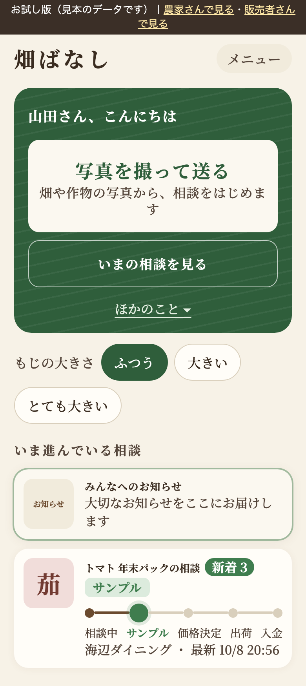
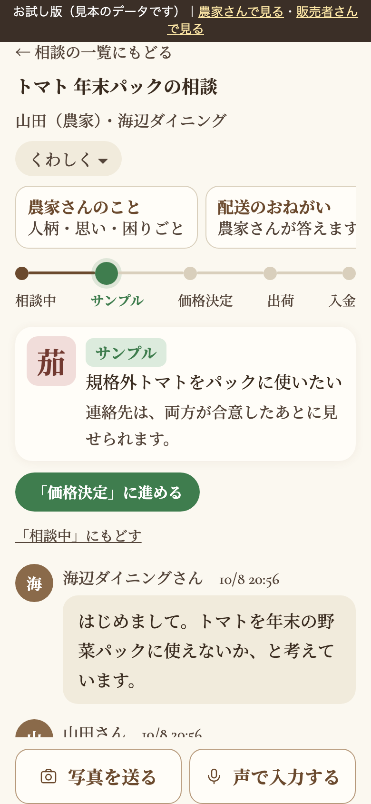
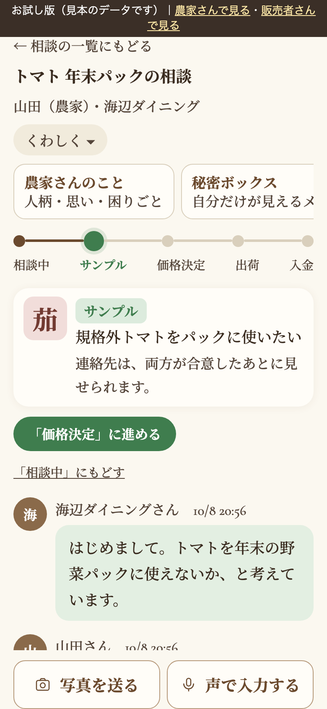
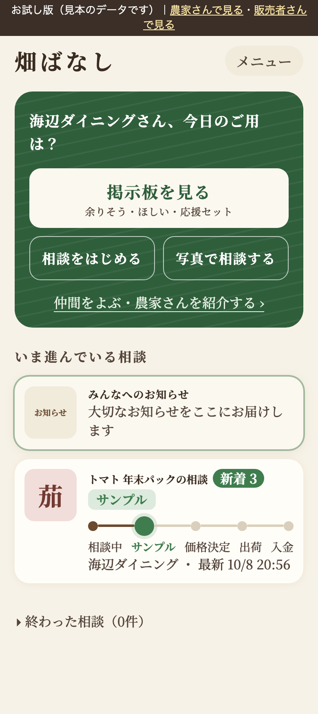
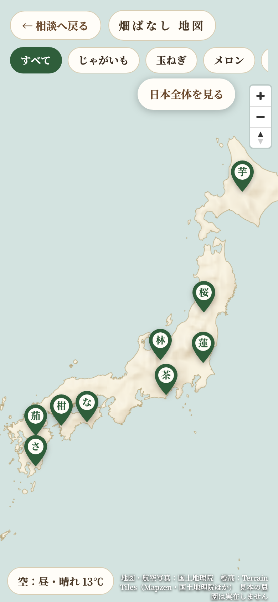

農家さんと販売者さんをつなぐ、取引の進み具合が見えるチャットアプリです。主な使い手は、スマホを使う高齢の農家さんです。進み具合は5段階（相談中→サンプル→価格決定→出荷→入金）。お金はアプリでは扱いません。評価（星）はありません。写真・声・通話リンク・アンケートが使えます。以下は見本データの画面です。
※ 見本の画面写真です（実際のアプリは開発中・試作段階）。

大きなボタンは2つだけ。「写真を撮って送る」「いまの相談を見る」。掲示板や仲間をよぶ機能は「ほかのこと」の中にしまっています。文字の大きさは3段階（ふつう・大きい・とても大きい）。下に、いま進んでいる相談が、5つの丸で進み具合つきで並びます。


上に相手の名前と5段階の進み具合。「価格決定に進める」ボタンで次へ。会話が画面の大半を占めます。細かい項目は「くわしく」の中にしまいました。下の操作は「写真を送る」「声で入力する」の2つです。連絡先は、両方が合意したあとに見られます。


全国の農家さんを、作物の字入りのピンで表示（見本の農園は実在しません）。作物での絞り込み、時間と天気で変わる空の表現があります。